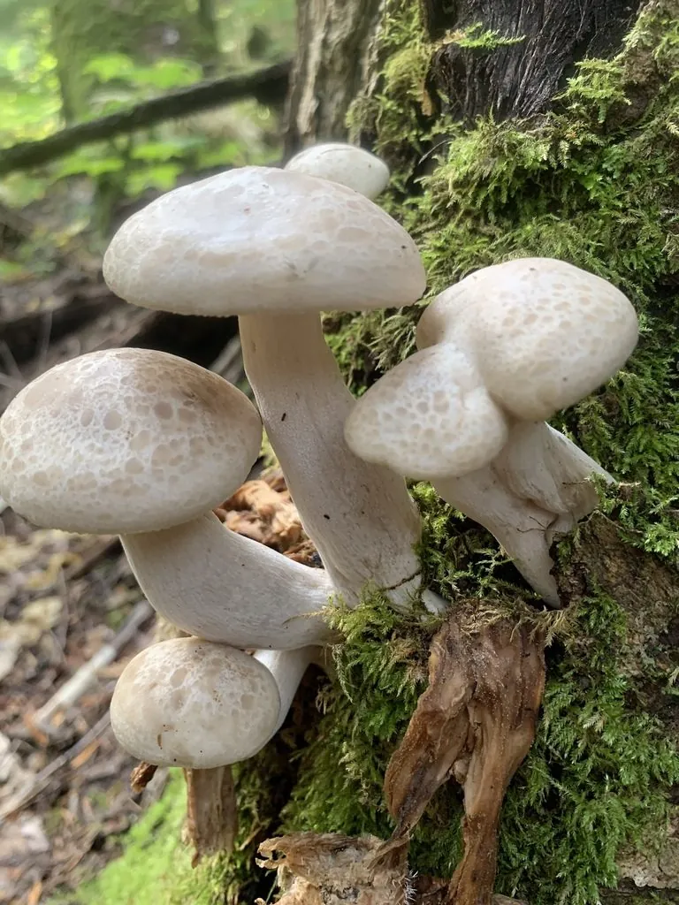

真菌 · 真菌界
真姬菇 Hypsizygus tessellatus

真姬菇的菌盖淡褐色、表面有水渍状龟裂纹，丛生如花，口感脆嫩、味道清鲜，是火锅和汤菜中常见的栽培食用菌。
- 分类
- 门担子菌门纲伞菌纲目伞菌目科离褶伞科属玉蕈属
- 栖息环境
- 山毛榉等阔叶树枯木，栽培用木屑、玉米芯等培养料
- 地理分布
- 日本、中国等地，现多为工厂化栽培
- 保护级别
- 暂无评估（IUCN 未评估，栽培食用菌）
物种志
真姬菇是担子菌门离褶伞科的真菌，子实体丛生。菌盖初期半球形，后平展，直径 2–8 cm，表面淡褐色、灰褐色至乳白色，最特别的是带有水渍状的大理石斑纹和龟裂纹，像海面的波光，因此商品名常叫“海鲜菇”；菌肉白色，脆嫩。菌褶弯生，白色至淡黄色，密集。菌柄白色，细长，长 4–10 cm，基部常相连成丛，有细微的绒毛。孢子印白色。
真姬菇野生于山毛榉等阔叶树的枯木上，靠分解木材生长，在日本被称为“ブナシメジ”，是常见的食用菌。中国工厂化栽培多用木屑、玉米芯和麸皮作培养料，在低温、弱光和高二氧化碳条件下长出菌盖小、菌柄长的产品。真姬菇口感脆嫩、味道清鲜，适合涮火锅、做汤和炒食；它耐煮、不易烂，是火锅店常见的菌菇拼盘成员。
形态与习性
- 菌盖直径 2–8 cm，淡褐色带水渍状斑纹
- 菌褶白色至淡黄色，密集
- 菌柄白色细长，基部相连成丛
- 孢子印白色
- 栽培木屑、玉米芯与麸皮培养料
- 食用性可食，口感脆嫩耐煮
- 别名玉蕈、海鲜菇
趣味知识
- 真姬菇菌盖上有水渍状的花纹，所以商品名常叫“海鲜菇”。
- 它丛生时一丛能有十几朵，基部连在一起。
- 工厂化栽培时给予低温、弱光和高二氧化碳，菌柄会变长。
- 真姬菇耐煮不易烂，是火锅拼盘里的常见成员。